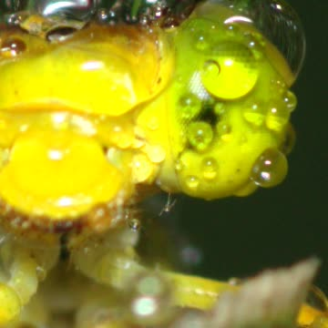
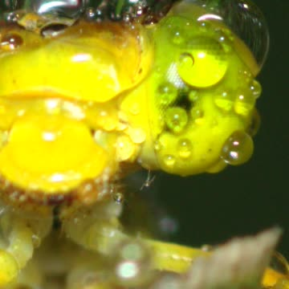
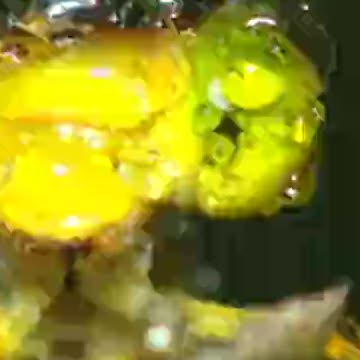
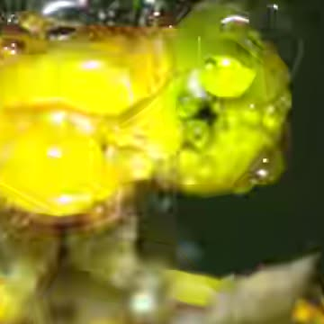

About
This demo gives an overview of the evaluation of different intra-frame based video encoding algorithms and their performance in case of image compression presented in a paper at EUVIP 2019 (Roma; Italy).
You can find the full implementation of the encoding experiment that is descirbed in the paper in the following git repository LINK.
In the following cropped images, different low quality settings are shown for several codecs (AV1, H.264, H.265, VP9, JPEG), filesizes and PSNR values refer to the full images. Source (83 MB),


AV1 (11 KB), PSNR=45.87
H.264 (19 KB), PSNR=39.74
H.265 (17 KB), PSNR=42.72
VP9 (15 KB), PSNR=45.36
JPEG (110 KB), PSNR=32.26
Abstract
Considering modern cameras, increasing image resolutions and thousands of images uploaded to sharing platforms there is still reason to have a deeper look into image compression. Especially lossy image compression is always a trade-off between file-size and image quality, where high quality is usually preferred for storage. Beside classical image compression, e.g. JPEG, there is also ongoing development to use video codecs to compress images. We analyze four different video codecs, namely AV1, H.264, H.265 and VP9, in comparison with JPEG. Our evaluation considers classical image quality metrics, e.g. PSNR, and also a modern subjective quality metric, i.e. Netflix's VMAF. We are able to show that modern video codecs can outperform classical JPEG compression both in terms of quality and file-size. For this we used 1133 uncompressed images and applied different encoding settings and estimated image quality.Authors
Steve Göring and Alexander Raake
Audiovisual Technology Group; Technische Universität Ilmenau, Germany
Email: [steve.goering, alexander.raake]@tu-ilmenau.de
Please refer to our publication if you use images of this dataset or use our developed code.
@inproceedings{goering2019Intra,
title={Evaluation of Intra-coding based image compression},
author={Steve G{\"{o}}ring and Alexander Raake},
booktitle={Visual Information Processing (EUVIP), 2019 8th European Workshop on},
pages={1--6},
year={2019},
organization={IEEE},
}